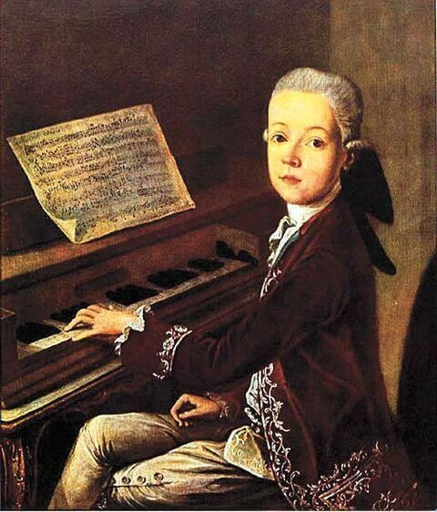
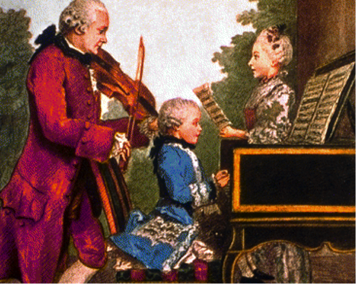

AMADEUS MOZART |
Wolfgang Amadeus Mozart - povestea unui geniu |
|
|
 Wolfgang Amadeus Mozart s-a născut la 27 ianuarie 1756 la Salzburg, pe atunci capitala unui principat-arhiepiscopat (germ. Fürstbistum) ce făcea parte din Sfântul Imperiu Roman de Naţiune Germană (după 1804 devenit Imperiul Austriac). Tatăl lui, Leopold Mozart, era un talentat violonist în orchestra de la curtea prinţului arhiepiscop din Salzburg, şi era apreciat pentru aptitudinele sale pedagogice. În registrul de botez, noul născut a fost înregistrat cu numele: Johannes Chrysostomus Wolfgangus Theophilus. Mai târziu, în Italia, şi-a luat numele de "Amadeus", traducerea latină a lui „Theophilus” („Iubitorul de Dumnezeu”). Încă de mic copil, Wolfgang dă dovada geniului său muzical. La vârsta de 5 ani, înainte de a şti să scrie, compune câteva piese pentru pian, transcrise imediat de tatăl său. În ianuarie 1762, Leopold Mozart obţine de la arhiepiscopul Schrattenbach un concediu de trei săptămâni, pentru "a arăta lumii acest miracol". Acest turneu va dura 9 ani! Prima apariţie are loc la München, unde Wolfgang execută muzică la clavecin în faţa prinţului elector de Bavaria, după care familia Mozart pleacă la Viena, tânărul Wolfgang concertând în faţa familiei imperiale. Urmează un lung turneu european: Augsburg, Aachen, Bruxelles, Paris şi Versailles. Rămâne un an la Londra, apoi se întoarce în Austria, trecând prin Franţa, Elveţia şi Bavaria. Între decembrie 1769 şi martie 1771 întreprinde un lung turneu în Italia: Verona, Milano, Florenţa, Roma şi Napoli au fost principalele staţiuni de concerte. Peste tot publicul era captivat de abilită ţile uimitoare ale acestui tânăr, care devenise deja adolescent în timp ce îşi demonstra talentul. Măiestria lui în arta sa îi hipnotiza pe toţi cei prezenţi, iar privirile lor erau lipite de fiecare mişcare pe care o făcea. Atmosfera era încărcată de anticipare şi admiraţie pentru potenţialul uriaş al acestui adolescent talentat. Familia Mozart revine la Salzburg la 15 decembrie 1771. Wolfgang împlineste 16 ani si pleaca pentru câteva luni la Bologna, unde studiaza cu Giovanni Battista Martini (1706-1816), renumit pedagog în arta compozitiei. La întoarcere este angajat ca maestru de concert (Konzertmeister) de catre noul arhiepiscop din Salzburg, contele Colloredo, cu un salariu de 150 de guldeni pe an, ceea ce constituia o suma apreciabila. În aceasta functie ramîne timp de sase ani, desi relatiile cu noul arhiepiscop nu sunt din cele mai bune, acesta tratându-l de servitor si interzicându-i sa paraseasca orasul Salzburg. Nemaiputând suporta umilintele, Wolfgang îsi da demisia în 1777 si pleaca, însotit de mama sa, la München, unde solicita un angajament la curtea printului elector Maximilian III. Acesta însa îl refuza. Dupa o alta tentativa nereusita la Mannheim, se hotaraste sa-si încerce soarta la Paris, unde - în timpul turneului din 1763 - avusese mult succes. Publicul parisian nu-si mai amintea însa de copilul minune de atunci si Mozart se loveste de multe greutati. La toate acestea se adauga moartea mamei, care îl însotise peste tot. Starea lui morala se amelioreaza cu greu, compozitiile sale încep sa fie apreciate la curtile domnesti. Lipsurile materiale îl constrâng totusi sa paraseasca Parisul si iata-l la 15 ianuarie 1779 din nou la Salzburg, unde ramâne doi ani. Între timp compune opera Idomenea, cu care înregistreaza un mare succes. Se decide totusi în 1781 sa plece la Viena, capitala imperiului. Viena era în acea epoca capitala mondiala a muzicii clasice. Mozart se simte în sfârsit independent si îsi creeaza un cerc de relatii, constient de faptul de a fi un virtuos fara egal al pianului. Înregistreaza primul mare succes cu opera Rapirea din serai, fiind felicitat de însusi împaratul Iosif II cu cuvintele: o muzica prea frumoasa pentru urechile noastre. Mozart da numeroase concerte publice si private, executând din propriile compozitii, improvizeaza spontan pe teme date, aplauzele nu contenesc, publicul este în extaz. Redescopera operele lui Bach si Händel, pe care le face cunoscute publicului vienez.  La 4 august1782 se casatoreste cu Constanze Weber. La 1785 este vizitat de tatal sau, Leopold, care - pâna atunci foarte reticent - constata cu satisfactie reusita lui Wolfgang. Este încântat sa auda din gura lui Joseph Haydn: "Fiul Dumneavoastra este cel mai mare compozitor pe care l-am cunoscut". La sfârsitul unui concert în Burgtheater, dupa interpretarea concertului nr. 20 pentru pian, împaratul Iosif - prezent în sala - se ridica în picioare agitându-si palaria si strigând "Bravo Mozart !". În aceasta perioada Mozart compune într-un ritm neobisnuit, lucreaza cu obstinatie la splendidele cvartete dedicate lui Haydn si la opera Nunta lui Figaro, dupa o piesa a lui Beaumarchais, opera revolutionara, ca muzica si continut istoric, reusind sa depaseasca dificultatile din partea nobilimii. În timp ce Mozart termina compozitia operei Don Giovanni, tatal sau se îmbolnaveste si moare la 28 mai 1787. Leopold a jucat un rol important în educatia muzicala a fiului sau, instruindu-l înca din copilarie si contribuind astfel la dezvoltarea geniului muzical al lui Mozart. Între 1784 si 1786, Mozart realizeaza în medie o compozitie la fiecare doua saptamâni, cele mai multe adevarate capodopere. Premiera operei Don Giovanni are loc la Praga si este primita de public cu entuziasm. Urmeaza opera Così fan tutte, reprezentata cu mai putin succes. Mozart pierde treptat din popularitate, între timp murise si protectorul sau, împaratul Iosif II, care îl numise compozitor al curtii imperiale. În martie 1790 da ultimul sau concert public, interpretând concertul pentru pian KV595. Compune înca opera Flautul fermecat, cu care obtine un succes enorm. Începând din luna noiembrie 1791, sanatatea lui Mozart se degradeaza însa progresiv. Se pare ca suferea de o febra reumatismala recurenta cu insuficienta renala. Speculatiile nu au lipsit, suspectându-se o otravire pusa la cale de rivalii lui, cum ar fi fost Antonio Salieri. La 4 decembrie starea lui se amelioreaza trecator, mai lucreaza la compozitia Requiem-lui, pe care nu va reusi sa-l termine. Exista marturii ca Requiemul a fost comandat compozitorului de o persoana necunoscuta, care i-a venit în vizita fiind îmbracata în straie de culoare neagra. Persoana a fost mai tîrziu identificata-acesta era un slujitor al unui conte vestit. Contele, pe numele Welsegg, avea intentia de a se interpreta Requiemul compus de Mozart cu ocazia trecerii din viata a sotiei sale, reclamînd cretia drept compozitie proprie. Despre aceasta întîmplare Mozart nu a mai aflat. El era convins ca muzica si-o scrie pentru propria sa moarte! În ziua de 5 decembrie 1791, viata scurta a lui Wolfgang Amadeus Mozart se stinge pentru totdeauna. Avea numai 35 de ani. Dupa un scurt serviciu divin la catedrala Sfântul Stefan („Stefansdom”) din Viena, trupul neînsufletit al lui Mozart este dus fara un cortegiu de însotitori (se pare ca asa era traditia la Viena), la cimitirul Sankt Marx, mormântul sau ramânând anonim pâna în zilele noastre.
Panait Claudia Alexandra
|